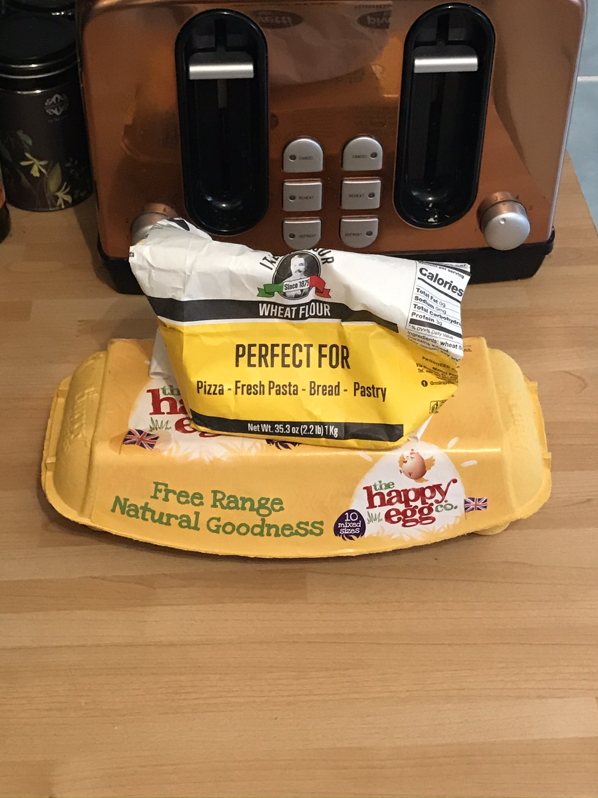
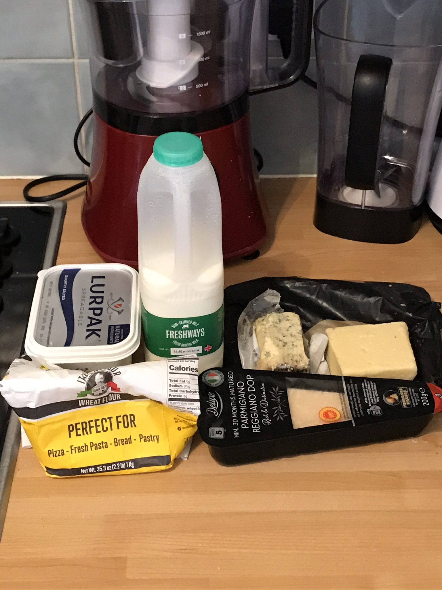
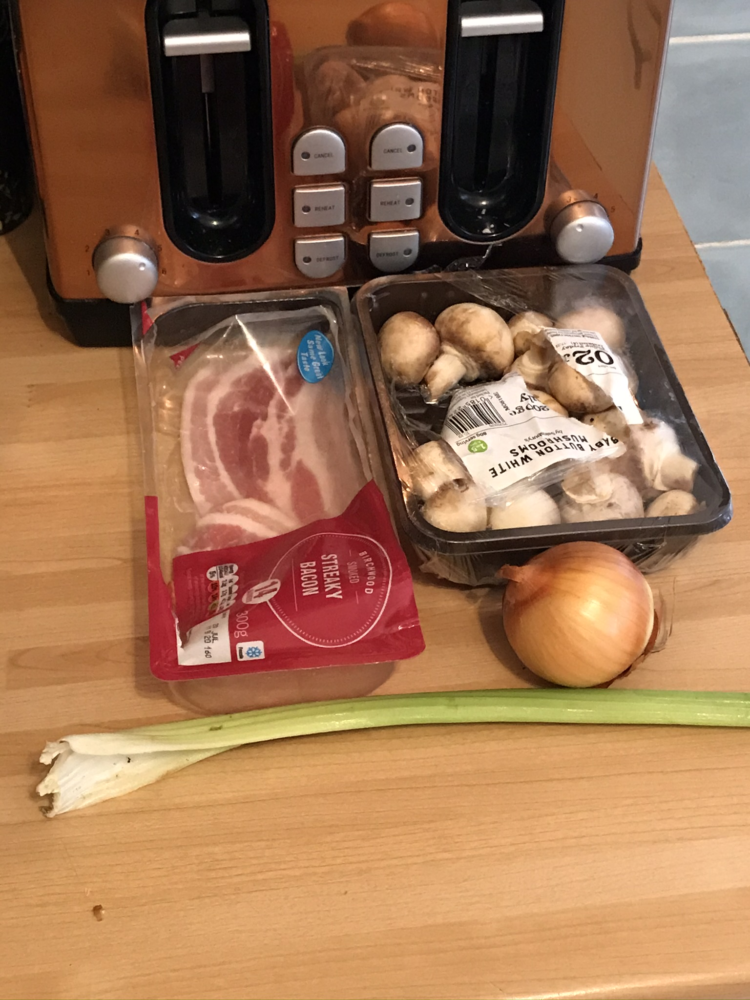
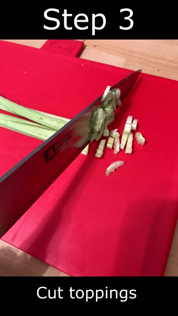
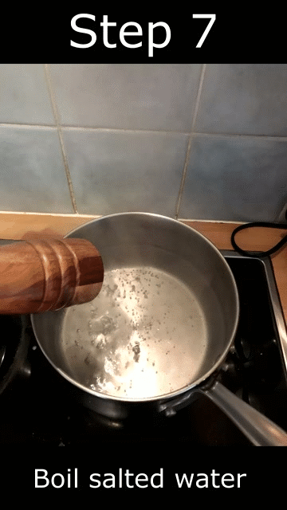
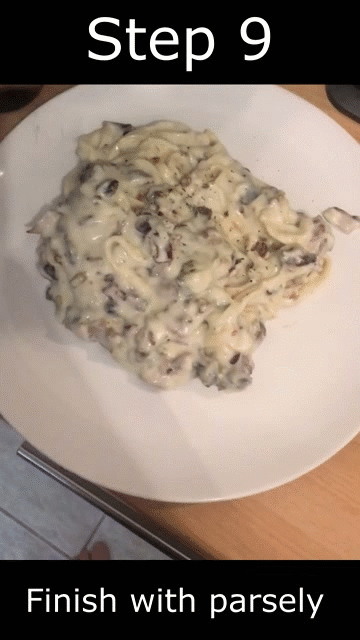
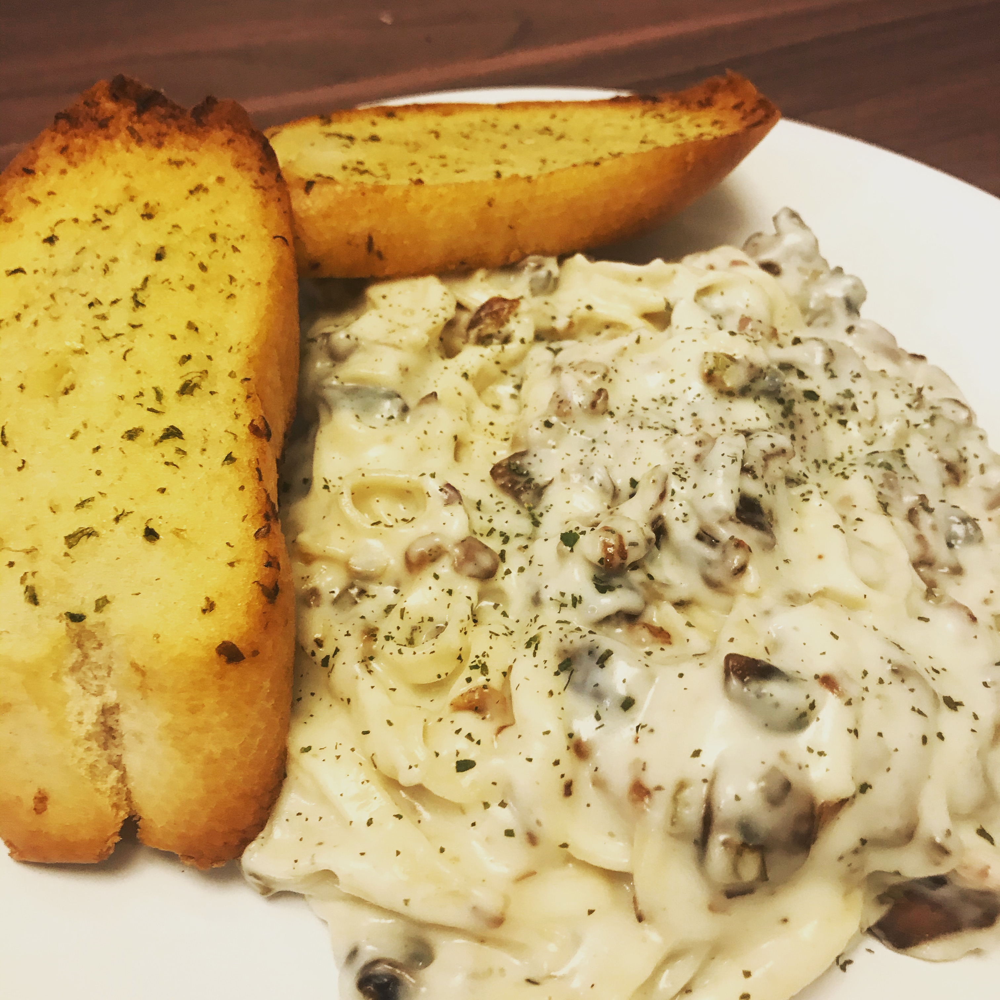

Homemade pasta with bacon, mushrooms and creamy blue cheese sauce
By Ben Knight
Click the arrow to see each step one at a time.

Pasta
- 1 egg
- 100g flour

Cheese sauce
- 1 tbsp butter
- 150 ml milk
- 1 tbsp flour
- 1 pinch nutmeg
- 1 handful grated blue cheese
- 1 handful grated cheddar cheese
- 1 handful grated parmesan cheese

Toppings
- 1 rasher bacon
- 1 handful mushrooms
- 1/2 onion
- 1 clove garlic
- 1 celery

Make a well in 100g flour and crack in an egg. Mix it together folding the flour from the edge over the egg.
As the egg incorporates, use your hands to press the dough together into a ball. Kneed for 1 min.

Roll the dough into a thin sheet. Then cut the dough sheet into thin tagliatelle.
If you don't have a pasta machine you can use a rolling pin and a knife.
Hang the pasta to dry it out, this will keep the pasta strands seperate and remove some of the excess flour.
You can use a pasta drying rack or the edge of a bowl, just try to keep the strands from touching each other.

Leave the pasta to dry and finely dice the onion, celery and mushrooms.
If you have fresh garlic then dice this too. Then chop the bacon into small pieces.

Fry the onion and celery until translucent. Then add the bacon and fry until starting to brown.
Add the garlic and mushrooms and fry for a few minutes, then set aside while you make the cheese sauce.

Melt the butter in a pan until it starts to foam, then add the flour. Add a splash of milk and stir it in.
Continue to stir until sauce starts to thicken, at which point add a splash more milk.
Repeat this until all the milk is used and you have a consistency of custard.
You can test this by dragging a spoon through the sauce and if it comes together too quickly
then it's too thin and needs more time to thicken up.

Add salt & pepper to taste and a pinch of nutmeg. Stir in the blue cheese and cheddar.
Cook the cheese sauce until the cheese is melted.

Bring water to a boil in a pan and lightly salt it. Once boiling add the pasta and cook for 3 mins.

Drain the pasta and add it to the cheese sauce. Then add the bacon and mushroom mixture.

Serve with a sprinkle of parsley and grating of parmesan cheese. And maybe some garlic bread!

❮
❯
Enjoy!